| |
TPR's Scandinavia Trip
Copenhagen Sommerland Sjaelland Bakken Tivoli Gardens Bon Bon Land
Hansa Park Legoland Billund Djurs Sommerland
Tivoli Friheden Farup Sommerland Tusenfryd Liseberg
Skara Sommerland
Grona Lund
Power Park
Sarkanemmi Linnemaki
All right. After our fun at Skara Sommerland, we actually ended up going to Grona Lund for more fun, and yeah. We have arrived in Stockholm.
Ooh. Very pretty view of Stockholm's Old Town.
I know a lot of my non-coaster friends are displeased that I was in Stockholm and didn't go explore it in detail like I did with Copenhagen and Helsinki. Sorry, I'm sure I'll be back in Stockholm fairly soon and check it out then.
There was a bit of a f*ck up in our hotel rooms as none of them were able to be opened. Bummer, but at least it's all fine now.
 All right. Now it's time to head on over to Grona Lund.
All right. Now it's time to head on over to Grona Lund.
We were greeted to Grona Lund by the park president with a nice presentation, dinner, and...
These complementary ponchos for the bad weather. Yeah, I should point out right now that we have been INCREDIBLY lucky when it comes to weather on this trip. I mean, this is Scandinavia, where it frequently rains A LOT. And yet, this is the first time on the trip where we've had to deal with rain, and considering how this is Day 12, that's amazing!!! =)
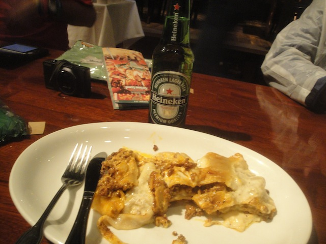
Oh, and I loved the dinner. Yes, there has been great food all over this trip, but this dinner was a personal favorite of mine.
All right. Time to move on and explore the park, and no, we did not do the bumper cars tonight.
 Nah. Let's start out with the fun house. Probably not a smart idea because with the difficult nature of this one and the handles being wet and slippery from the rain, I was genuinely worried that I'd slip and fall for a split second (FYI, I AM using both hands. This was shot with a GoPro).
Nah. Let's start out with the fun house. Probably not a smart idea because with the difficult nature of this one and the handles being wet and slippery from the rain, I was genuinely worried that I'd slip and fall for a split second (FYI, I AM using both hands. This was shot with a GoPro).
Ooh. Trippy.
 "Jane!! Stop this crazy thing!!!"
"Jane!! Stop this crazy thing!!!"
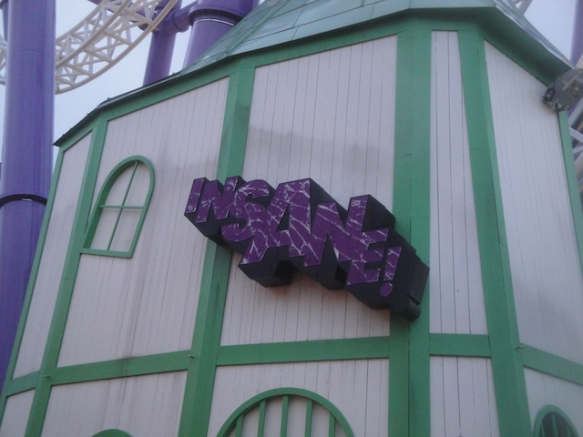
All right. That was fun, but let's get these credits out of the way. And yep, it's time for INSANE!!!
 It feels so good to be riding Un-neutered Green Lantern again, oh wait. Even that wasn't as good as this. =)
It feels so good to be riding Un-neutered Green Lantern again, oh wait. Even that wasn't as good as this. =)
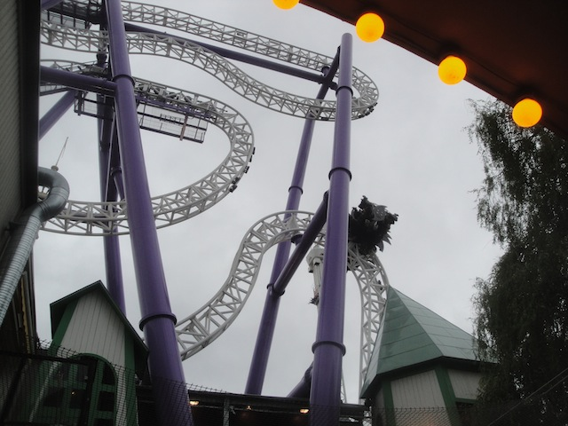
Let me put it this way. At it's WORST, Insane is on par with Green Lantern at it's VERY BEST, right when it first opened and before Six Flags got their dirty hands on it and f*cked it up. Don't even get me started on the way Insane is when run for special events.
And overall, I just love the theme of Insane. It's simple, but effective.
Don't feel bad random Swedish woman. I made that exact same face when I saw what Six Flags Magic Mountain did to Green Lantern.
 We really need more classic Schwarzkophs like this running.
We really need more classic Schwarzkophs like this running.
 Oh, and their Wild Mouse is AMAZING!!!
Oh, and their Wild Mouse is AMAZING!!!
 Well, it's technically not a Wild Mouse, so I can't list it as my favorite, but I love it nonetheless.
Well, it's technically not a Wild Mouse, so I can't list it as my favorite, but I love it nonetheless.
 Hey, it may not be Balder from yesterday, but I still thouroughly enjoyed Twister. =)
Hey, it may not be Balder from yesterday, but I still thouroughly enjoyed Twister. =)
Got the Kvasten credit, and yeah. It's a nice fun ride.
Much like Liseberg, Grona Lund has an all year round Horror Maze, and it's normally an upcharge, but we didn't have to pay. Tack Grona Lund.
 Hey, it may not be the best, but it still beats everything at Fright Fest.
Hey, it may not be the best, but it still beats everything at Fright Fest.
 All right. Now it's time for the credit whoring to really begin.
All right. Now it's time for the credit whoring to really begin.
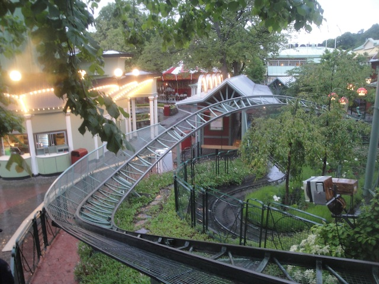
Hey, this ride may not be thrilling at all. But it did something that no other ride was able to do so far.
 It made Nolan lose his still camera. Yes, while other people lose their cameras to rides like Silver Bullet, Nolan lost his still camera to this itty bitty kiddy coaster.
It made Nolan lose his still camera. Yes, while other people lose their cameras to rides like Silver Bullet, Nolan lost his still camera to this itty bitty kiddy coaster.
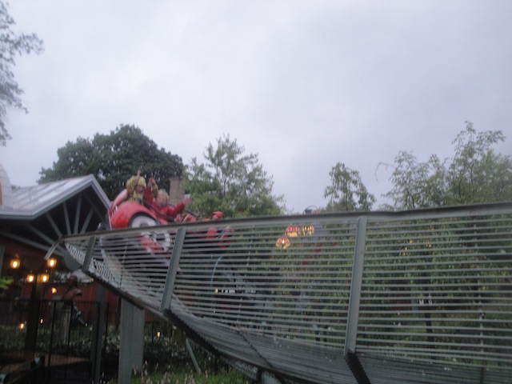
It still baffles me how something like this would have the laterals to throw a camera out of ones pocket.
"No, I'm not just goofing off. I'm checking to see if I can find Nolan's still camera. No luck so far."
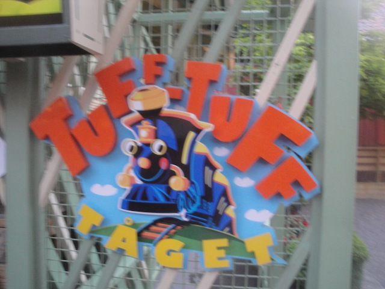
Just one last credit and then I'm all done.
 Yay!! I got the (barely counts as a) credit!! And nobody lost their still camera or $900 sunglasses on it either. =)
Yay!! I got the (barely counts as a) credit!! And nobody lost their still camera or $900 sunglasses on it either. =)
Yes, we rode this kiddy log flume. And yes, we fit.
 Ooh. Entering the tunnel of love.
Ooh. Entering the tunnel of love.
Oh, so love is jesting for a king at axe point. Sorry Disney movies, you got it all wrong.
The stand up floorless side may be closed due to winds, but we were still able to the normal side of their drop tower.
"Hey American Parks!! We were able to get all the credits here and do other fun things such as the fun house, drop tower, and tunnel of love dark ride all during a rainstorm over here in Sweden. What's your excuse?" =)
If you're wondering why we're all huddled over here. Well, because there's a heater here, and...
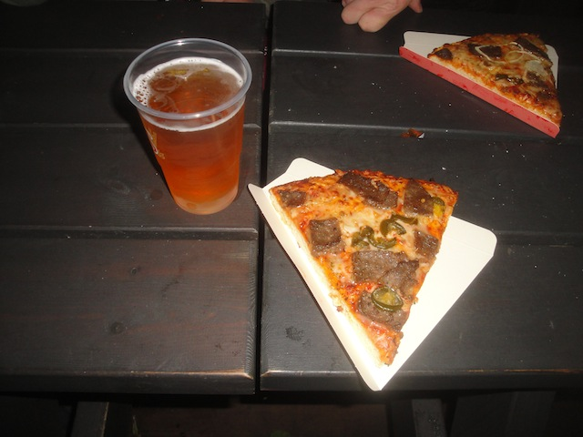
There's free pizza and beer over here. You wouldn't want to leave if there was free pizza and beer over here? =)
And yeah. During ERT, we had perhaps the craziest thing ever!! The Insane Water Challenge!!!
Some people managed to actually keep water despite the crazy flipping (it's called cheating). My personal favorite was watching Neil come into the brake run with a full cup of water. Then in smugness, lifted his hand from the top (told you it was via cheating) and then they flipped and he lost ALL the water. =)
All right. Time for the next day of the trip. First up, a LOT of ERT and throughout it all, we had groups of people climbing the Starflyer (but we'll take about that later).
 Let's get ERT started with some good old Schwarzkoph action.
Let's get ERT started with some good old Schwarzkoph action.
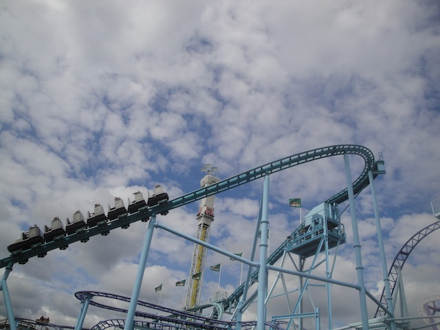
I really hope that it's clone in England finds a home, cause this ride is awesome.
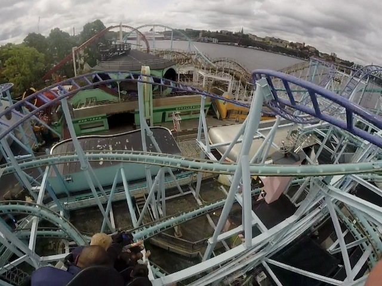
It's just a hot twisted mess. And yes, this drop is as good as it looks.
 Jetline vs Vilden Mausen!!! FIGHT!!!!
Jetline vs Vilden Mausen!!! FIGHT!!!!
All right, now let's get some more rides on Twister since I only got one yesterday.
 Twister may not be Top 10 worthy or amazing, but much like Wooden Warrior in the U.S.A, it packs a powerful punch in a small space.
Twister may not be Top 10 worthy or amazing, but much like Wooden Warrior in the U.S.A, it packs a powerful punch in a small space.
 It's got some really nice airtime.
It's got some really nice airtime.
And some really nice laterals as yeah, Twister is indeed, very twisted.
I'm not sure who exactly was performing during ERT, but I really liked their performance.
Hey, why not take a 2nd ride on Kvasten while it's open.
 Kvasten isn't like the normal kiddy SLCs, as this one has a custom layout and is much more enjoyable.
Kvasten isn't like the normal kiddy SLCs, as this one has a custom layout and is much more enjoyable.
Plus it's themed to flying witches and located at Grona Lund. That also significantly helps its cause. =)
 Oh, and the stand up floorless side of the drop tower is now open. And considering how much better these things are standing up with no floor, this is easily one of the best drop towers I've ever ridden. =)
Oh, and the stand up floorless side of the drop tower is now open. And considering how much better these things are standing up with no floor, this is easily one of the best drop towers I've ever ridden. =)
 Ok, now it's time for me to climb up to the top of the Star Flyer. Now some of you may be wondering "Why the hell would they allow a guy who has a tendency to jump off cliffs to the top of a 400 ft Star Flyer?" Well, as some of you know, Coastin for Kids, has been big at Cedar Fair parks for a while now as a way to funraise to Give Kids the World to help kids with cancer. Well Grona Lund wanted to help, so they made an offer. Host an auction and the top 20 fundraisers will go up to the top of the Star Flyer. I participated, but due to my hatred of auctions (F*CK EBAY!) and me watching my wallet due to my INSANE budget to fundraise for 2015, I didn't get in. Not surprising. But then Grona Lund expanded on that offer to raise more money for Coastin for Kids. So anyone who donates $200 will be able to climb up to the top. This caught my attention and really tempted me. I really want to do this, but I'm on a nightmare suffocatingly tight budget. Can I pull this off? I was on the verge of declining, but then I thought. I probably will never have another oppertunity to go up to the top of a star flyer. Think of all the shots I can get. Think how much better my Grona Lund video will be with all those angles. Think of the experience. Screw it, it's an investment in photography and I made the donation. So now I get all these awesome shots, a great experience, more money goes to kids with cancer, and I can write this off on my 2015 taxes. It's a win win scenario for everyone.
Ok, now it's time for me to climb up to the top of the Star Flyer. Now some of you may be wondering "Why the hell would they allow a guy who has a tendency to jump off cliffs to the top of a 400 ft Star Flyer?" Well, as some of you know, Coastin for Kids, has been big at Cedar Fair parks for a while now as a way to funraise to Give Kids the World to help kids with cancer. Well Grona Lund wanted to help, so they made an offer. Host an auction and the top 20 fundraisers will go up to the top of the Star Flyer. I participated, but due to my hatred of auctions (F*CK EBAY!) and me watching my wallet due to my INSANE budget to fundraise for 2015, I didn't get in. Not surprising. But then Grona Lund expanded on that offer to raise more money for Coastin for Kids. So anyone who donates $200 will be able to climb up to the top. This caught my attention and really tempted me. I really want to do this, but I'm on a nightmare suffocatingly tight budget. Can I pull this off? I was on the verge of declining, but then I thought. I probably will never have another oppertunity to go up to the top of a star flyer. Think of all the shots I can get. Think how much better my Grona Lund video will be with all those angles. Think of the experience. Screw it, it's an investment in photography and I made the donation. So now I get all these awesome shots, a great experience, more money goes to kids with cancer, and I can write this off on my 2015 taxes. It's a win win scenario for everyone.
First things first, you have to climb up 25 ft to get to the 2nd ride up.
But don't expect that part to be a cakewalk. You have to essentially just hold on to nothing has you ride on up to the top, where you have another ladder to climb up. This part personally was not a favorite of mine, not because I'm afraid of heights (Remember, I jump off cliffs), mostly because I'm a kind of guy who likes to lean back, so I was constantly reminded that I'm barely strapped in and am nearly tilting to my death, so it was an uncomfortably straight ride to the top (Thank god for photography to occupy me).
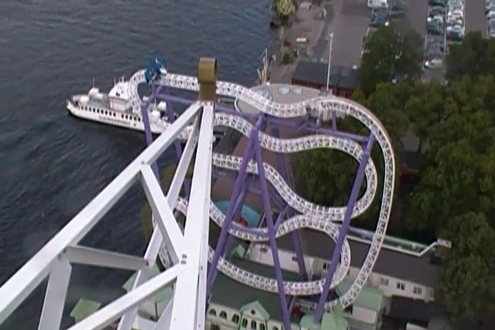
Insane is so good. Can I just have this and never ride Green Lantern again?
 You gotta admit. These Jetline shots are AMAZING!!!
You gotta admit. These Jetline shots are AMAZING!!!
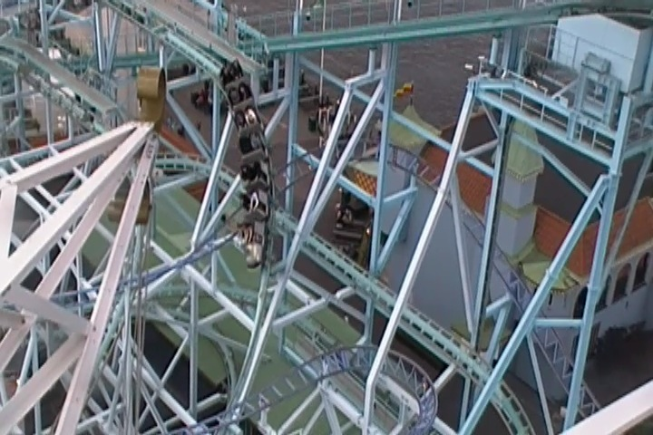
Just checking to make sure nobody is climbing up the lifthill. =)
 See if you can spot the TPR members in this photo.
See if you can spot the TPR members in this photo.
 Love the "OH SH*T!!!" look on their faces.
Love the "OH SH*T!!!" look on their faces.
Yay!!! We made it to the machine room and just have one ladder to go until we reach the ball at the top.
 "I did it!!! I climbed to the top of this Star Flyer!!"
"I did it!!! I climbed to the top of this Star Flyer!!"
Yes, that is corret. I am standing up at the top of the sphere at the top of one of the worlds tallest Star Flyers.
And just as I expected, the view of Stockholm is just absolutely beautiful.
Cliff Jump!!!
 "Hey Six Flags Over Texas!!! Suck it!!!"
"Hey Six Flags Over Texas!!! Suck it!!!"
 Still hard to belive I just climbed a star flyer on this day.
Still hard to belive I just climbed a star flyer on this day.
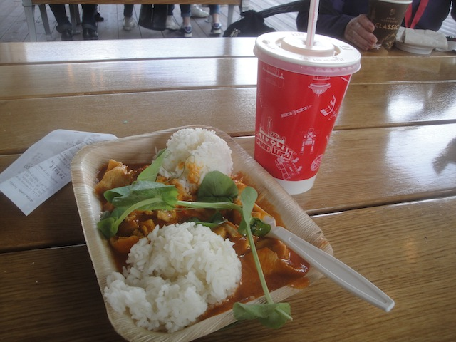
Tried out one of the Thai places for lunch, and I must admit. It's really good.
Had to get another ride on Vilda Musen because...I just love this ride.
 Nice airtime, nice laterals, great setting, just an overall pleasent family coaster.
Nice airtime, nice laterals, great setting, just an overall pleasent family coaster.
I particuarlly like the way it just snakes its way through Jetline and over Grona Lund. These Gerstlauter Bobsleds need to come to America ASAP.
"Give me that. I know how to ride a unicycle (barely)."
"Grr, hows it going. I'm a statue. I'd tell you to gimme some candy, but I'm an innatimate object. Woe is the life of a statue."
Well Stockholm, ♫ It's been fun, but now I've got to go. Life is way too short to take it slow. ♫ Seriously, Stockholm looks like an awesome city and Grona Lund is amazing. When Can I See You Again?
All right. Time for us to head onto the Overnight Ferry to Helsinki. Sorry Tallinn, maybe next time.
This isn't our ship. Our ship is much bigger than this.
"Now remember. Once you start vomiting, you've reached your cut-off point and must stop drinking."
I love this. Not only was check in very pleasent, but I love how they have these machines that let you grade the experience. This needs to come to all Six Flags parks immidietly. Well, you got a green smiley face from me. =)
Oh, and there's our rooms. I'll see you at 3:00 AM.
Yeah. This is less like a typical ferry and more like a cruise ship.
 Hmm. Black Sheep with a beer. Yeah, that seems like me all right.
Hmm. Black Sheep with a beer. Yeah, that seems like me all right.
Whenever the oppertunity to eat dinner with chopsticks is avaliable, always take it.
Love the unlimited desserts on the ship.
"Hey all you folks bitching about taxes!! Quit complaining and just shop at the Tax Free Store. Problem solved."
Hey Ross. Would you like this Seamen Shot from me?
Dude!! They have Crispy M&Ms over here!!! This is simply awesome!!! For those who don't know, Crispy M&Ms used to be a flavor back in the late 90s and they were one of my favorite kinds of M&Ms, but they discontinued them in the early 2000s. Or so I thought. They've been here in Europe this entire time!! MUST BUY!!!!
I just absolutely love sailing through these Fjords in Sweden.
Oh look. The sun is setting (must be midnight) and now the fun is really about to begin.
Yep. Time to drink and enjoy other humiliate themselves at Karaoke.
"Uhhh...I'm too drunk to remember the words to this Rihanna song, so I'm just gonna twerk instead."
Sailing right past one of the Åland Islands.
Of course, you knew Karaoke wouldn't be complete without Mr. Big Spender Ross getting up on stage.
After karaoke, it was just dancing on the dance floor all night. And yeah, I had a drunken blast.
Power Park
Home
|